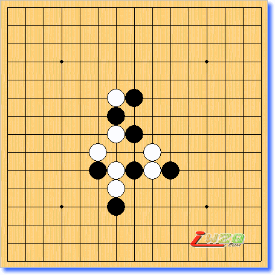
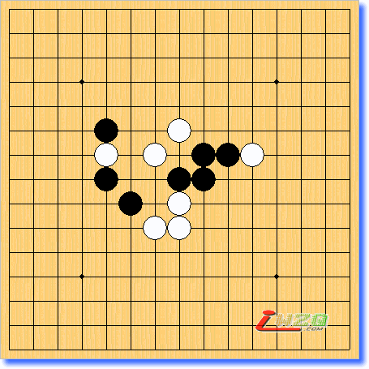
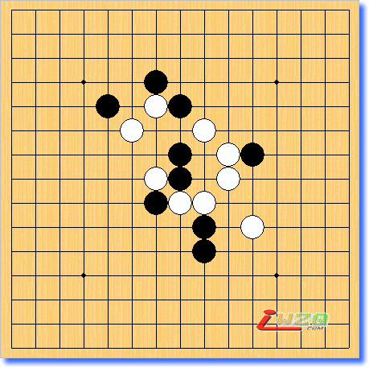
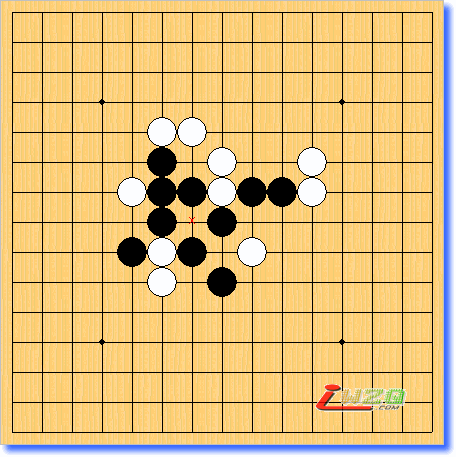
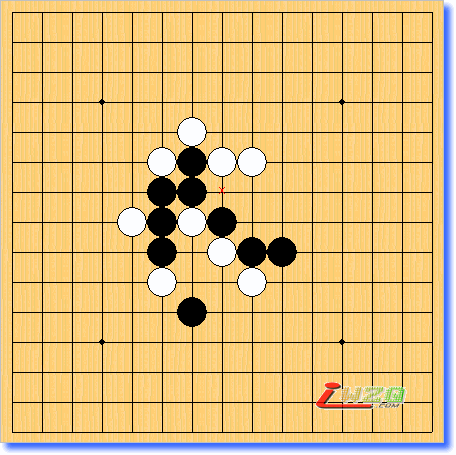
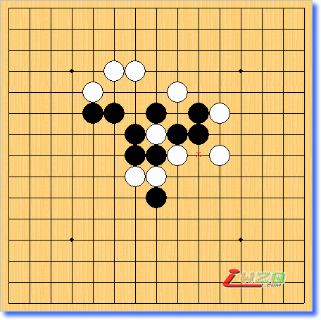
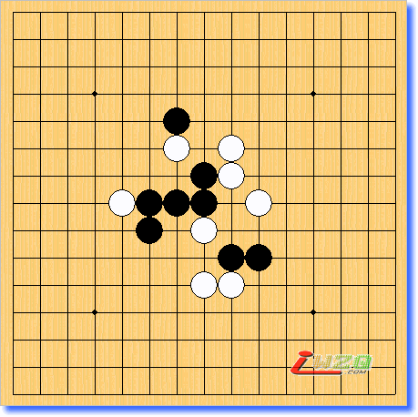
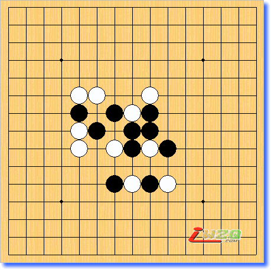
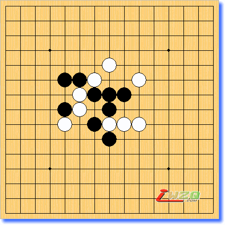
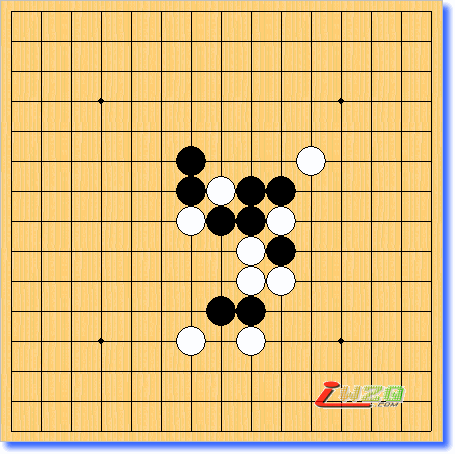

坂田吾朗三手胜全套在线习题集之[高级篇1-10题]
#1 坂田吾朗三手胜全套在线习题集之[高级篇1-10题] 作者：飞翔 发表时间：2006-3-26 13:52:27

h8g8g9g10h10f7f6g6h6i6j6i7g4g5
#2 Re:坂田吾朗三手胜全套在线习题集之[高级篇1-10题] 作者：飞翔 发表时间：2006-3-26 13:54:03
第二题

h8h7i8h6i9g6f7e9e8g9e10h10j9k9
#3 Re:坂田吾朗三手胜全套在线习题集之[高级篇1-10题] 作者：飞翔 发表时间：2006-3-26 13:56:59
第三题

h8g8g7h7i6i7i5k6h9j8k9j9h11i10g12g11e11f10
#4 Re:坂田吾朗三手胜全套在线习题集之[高级篇1-10题] 作者：飞翔 发表时间：2006-3-26 13:59:22
第四题

h8h9g9i7i9h10g7f6f8f7e7e9h6f11f10g11f9k9j9k10
#5 Re:坂田吾朗三手胜全套在线习题集之[高级篇1-10题] 作者：飞翔 发表时间：2006-3-26 14:02:37
第五题

h8h7i7g8g9f10f9i6g10g11f8e8f7f6g5h10j7i10
#6 Re:坂田吾朗三手胜全套在线习题集之[高级篇1-10题] 作者：飞翔 发表时间：2006-3-26 14:05:20
第六题

h8i8h6h7g8g7g9h9f10e11e10f12h10g12i9k8j9k10j10i11
#7 Re:坂田吾朗三手胜全套在线习题集之[高级篇1-10题] 作者：飞翔 发表时间：2006-3-26 14:08:10
第七题

h8h7g8e8f8g10f7h5i6i5j6j8h9i10g11i9
#8 Re:坂田吾朗三手胜全套在线习题集之[高级篇1-10题] 作者：飞翔 发表时间：2006-3-26 14:11:30
第八题

h8g7g9h9f8f10e9e7h7e8g5e10i5h5j7i7i8i10i9j5
#9 Re:坂田吾朗三手胜全套在线习题集之[高级篇1-10题] 作者：飞翔 发表时间：2006-3-26 14:14:22
第九题

h8h7h6i7g7f8i9j10h9f9g9g10f10h11e8j7e10e7
#10 Re:坂田吾朗三手胜全套在线习题集之[高级篇1-10题] 作者：飞翔 发表时间：2006-3-26 14:18:42
第十题

h8g8g9h9g10j8i8k10j9i7i9i6j7j6i5i4h5g4
#11 Re:坂田吾朗三手胜全套在线习题集之[高级篇1-10题] 作者：yidefei 发表时间：2006-3-28 8:58:42
这个你要是能打成是renlib谱的话那该多好呢？#12 Re:坂田吾朗三手胜全套在线习题集之[高级篇1-10题] 作者：飞翔 发表时间：2006-3-29 9:37:37
lib的图虽然清晰,但rena的这个可以在线直接做题,
lib就没这个功能,以后发布的实战谱,可以考虑用lib的.
#13 Re:坂田吾朗三手胜全套在线习题集之[高级篇1-10题] 作者：qq4114 发表时间：2006-4-6 10:06:58
好难#14 Re:Re:坂田吾朗三手胜全套在线习题集之[高级篇1-10题] 作者：清逸 发表时间：2006-5-17 19:36:22
真好，楼主辛苦了
可我有一点不明白，为什么我用rena发的帖子不能在线打谱哪？？
#15 Re:坂田吾朗三手胜全套在线习题集之[高级篇1-10题] 作者：天涯游子 发表时间：2006-5-18 10:05:53
有答案吗,你的好多练习都没有答案的,能补上去吗?
#16 Re:坂田吾朗三手胜全套在线习题集之[高级篇1-10题] 作者：东方一步 发表时间：2006-7-3 22:37:13
试解答第1题，不知对不对，请高手斧正。
#17 Re:坂田吾朗三手胜全套在线习题集之[高级篇1-10题] 作者：东方一步 发表时间：2006-7-3 23:07:13
试解答第2题，不知对不对，供讨论。
#18 Re:坂田吾朗三手胜全套在线习题集之[高级篇1-10题] 作者：东方一步 发表时间：2006-7-3 23:33:49
试解答第3题，不知对不对，供讨论。
#19 Re:坂田吾朗三手胜全套在线习题集之[高级篇1-10题] 作者：东方一步 发表时间：2006-7-4 12:37:28
第4题，题目出错了，正确的题如下：
#20 Re:坂田吾朗三手胜全套在线习题集之[高级篇1-10题] 作者：东方一步 发表时间：2006-7-4 12:40:07
第4题，试解答，不知对不对，供讨论。
#21 Re:坂田吾朗三手胜全套在线习题集之[高级篇1-10题] 作者：东方一步 发表时间：2006-7-4 19:50:47
试解答第5题，不知对不对。
#22 Re:坂田吾朗三手胜全套在线习题集之[高级篇1-10题] 作者：东方一步 发表时间：2006-7-4 19:58:36
试解答第6题。
#23 Re:坂田吾朗三手胜全套在线习题集之[高级篇1-10题] 作者：东方一步 发表时间：2006-7-4 20:05:50
试解答第7题。
#24 Re:Re:坂田吾朗三手胜全套在线习题集之[高级篇1-10题] 作者：龙君啸 发表时间：2006-7-7 0:13:09
解答2
#25 Re:坂田吾朗三手胜全套在线习题集之[高级篇1-10题] 作者：彩云飞 发表时间：2006-8-11 14:45:53
看看
#26 Re:坂田吾朗三手胜全套在线习题集之[高级篇1-10题] 作者：xialin 发表时间：2006-8-19 17:04:27
第四题做不出来~棋谱没问题吧？？？
高级篇的这10题该叫四手胜才对~
#27 Re:坂田吾朗三手胜全套在线习题集之[高级篇1-10题] 作者：酒鬼 发表时间：2006-8-22 21:11:31
谢谢 ，辛苦了
#28 Re:坂田吾朗三手胜全套在线习题集之[高级篇1-10题] 作者：mhj052 发表时间：2006-11-24 18:00:02
en en en#29 Re:坂田吾朗三手胜全套在线习题集之[高级篇1-10题] 作者：yuelee 发表时间：2006-12-20 12:21:19
好题！支持小飞翔！#30 Re:坂田吾朗三手胜全套在线习题集之[高级篇1-10题] 作者：什锦菜 发表时间：2007-3-6 13:17:55
这个让我研究还太早，才入门啊，呵呵#31 Re:坂田吾朗三手胜全套在线习题集之[高级篇1-10题] 作者：颜炳杰 发表时间：2007-4-3 22:42:20
怎么没有任何说明?#32 Re:坂田吾朗三手胜全套在线习题集之[高级篇1-10题] 作者：颜炳杰 发表时间：2007-4-4 11:14:14
第四题直接走J8就完事了#33 Re:坂田吾朗三手胜全套在线习题集之[高级篇1-10题] 作者：pdsly 发表时间：2007-4-10 14:16:39
好难啊#34 Re:坂田吾朗三手胜全套在线习题集之[高级篇1-10题] 作者：友善 发表时间：2007-4-22 2:35:30
我怎么看不到?#35 Re:坂田吾朗三手胜全套在线习题集之[高级篇1-10题] 作者：我能我能我能 发表时间：2009-8-18 0:56:35
这些题真的很难吗 咋么感觉比初级题简单好多啊 每道题只花5分钟就想出来了 初级题有的要想一个钟头#36 Re:坂田吾朗三手胜全套在线习题集之[高级篇1-10题] 作者：我能我能我能 发表时间：2009-8-18 0:58:58
感觉五子棋入门很难 入了门就简单好多#37 Re:坂田吾朗三手胜全套在线习题集之[高级篇1-10题] 作者：我能我能我能 发表时间：2009-8-18 1:09:37
给大家一些忠告 练习习题不是为了答案 关键是解出答案后反过头来想想自己为什么花了那么久才想出答案的 到底是哪里的问题 从中找出自己对五子思考方式上的缺点进行总结 这样以后作题的时候就有了一个思考方向 养成对的思考习惯真的很重要
#38 Re:坂田吾朗三手胜全套在线习题集之[高级篇1-10题] 作者：我能我能我能 发表时间：2009-8-18 15:53:01
这真的是高级题吗也太简单了把
#39 Re:坂田吾朗三手胜全套在线习题集之[高级篇1-10题] 作者：我能我能我能 发表时间：2009-8-18 15:53:28
尤其是最后3题#40 Re:坂田吾朗三手胜全套在线习题集之[高级篇1-10题] 作者：我能我能我能 发表时间：2009-8-18 15:53:45
尤其是最后3题#41 Re:坂田吾朗三手胜全套在线习题集之[高级篇1-10题] 作者：我能我能我能 发表时间：2009-8-22 23:58:47
http://tieba.baidu.com/f?kz=482923830这是三手胜的全部题的网址包括入门初级中级高级总共120题 而且可以手机直接看 这是我最喜欢的